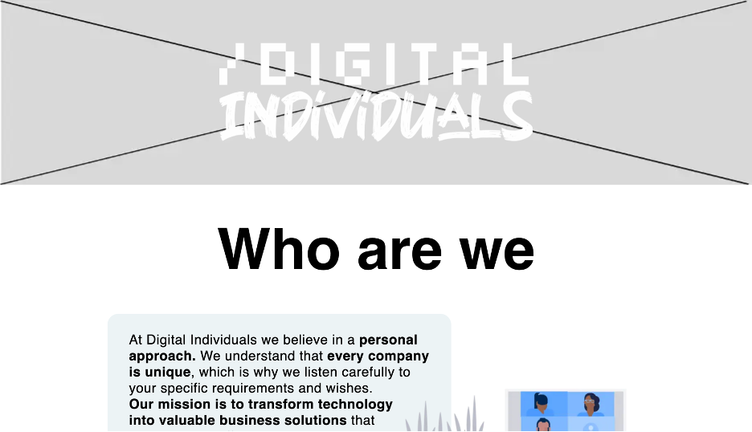

Project for stakeholder and companies who are searching for
an ICT business. For this project, I need to show what this
business can do for other businesses in the ICT. I do this
with a website so I can show what services they give and who
they are.
For this website, my stakeholder recommended me to do some
research for frameworks. He also uses these frameworks in his
projects and upcoming business. For these frameworks I did
research on the websites of the frameworks itself and just
experimented in the project. For me it was an easy way to learn
because it is very logical in use. For tailwind, there are all
documents of showing how to use it, so it is very easy to find
what I need. With nextjs, you start with a page that is already
made, so in that way I looked how the structure was and I
adjusted this to what I needed, so this was also an easy way to
start with this.